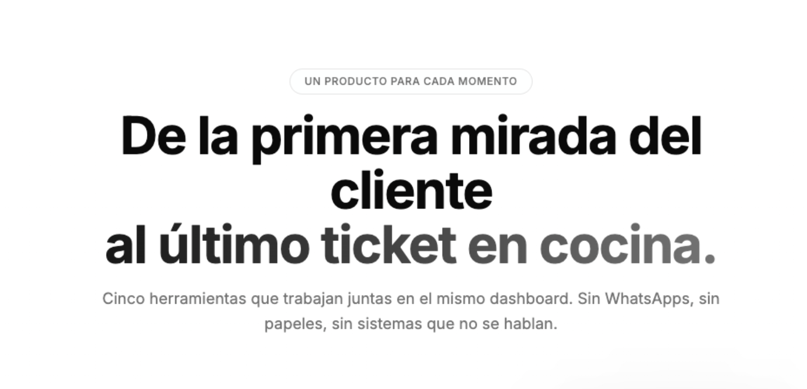

2026 · SaaS para restaurantes · IA · Usabilidad
NowEat
Una plataforma SaaS para restaurantes construida por dos personas usando IA, con clientes reales y sin inversión externa.
Rol
Usabilidad · Estrategia de producto
Sector
Hostelería
Año
2026
Estado
En producción · 4 clientes

El problema
Un restaurante medio en España gestiona su negocio con más de tres herramientas desconectadas entre sí: una para el menú digital, otra para los pedidos, otra para el TPV, otra para las reservas. El coste combinado supera los 300€/mes y cuando algo falla en el servicio — el viernes a las 21h con 60 cubiertos — no hay soporte disponible.
El hostelero medio no es un usuario tecnológico. No quiere aprender cuatro interfaces diferentes. Quiere que funcione, que sea fácil de configurar y que cuando falle alguien coja el teléfono.
El brief inicial era "construir una plataforma SaaS para restaurantes". El problema real era más concreto: los restaurantes no necesitan más tecnología — necesitan menos tecnología que funcione mejor.
Competencia y posicionamiento
Analizamos el mercado en detalle. Qamarero es la competencia directa. Heydiga compite específicamente en el bot telefónico con IA. En reservas, los referentes son Cover Manager, The Fork y OpenTable.
| Competidor | Modelo | Debilidad |
|---|---|---|
| Qamarero | Suscripción | Sin TPV integrado, sin reservas |
| Cover Manager | Hasta 299€/mes | Pensado para grandes grupos, excesivo para el restaurante medio |
| The Fork | Comisión por reserva | Dependencia del directorio, sin solución de operaciones |
| Heydiga | Suscripción | Solo bot telefónico, no es plataforma completa |
Entrevistamos a propietarios de varios tamaños. El hallazgo clave: el obstáculo no era el precio — era el miedo a cambiar algo que ya funciona. Un restaurante en servicio no puede permitirse que algo falle. Eso definió dos estrategias: 15 días de prueba sin fricción y soporte humano directo cuando algo falla en el servicio. No un chatbot — una persona al teléfono.
Decisiones de diseño
Diseñamos la arquitectura del producto como 5 módulos independientes pero cohesivos: menú digital (con traducción automática a más de 10 idiomas), pedidos en mesa, TPV/KDS, reservas y un paquete completo a 99€ que ahorra 58€ frente a contratarlos por separado. La modularidad fue una decisión deliberada: el restaurante pequeño empieza con el menú, el grande entra por el paquete completo.
Decisión tomada
Módulos independientes con precio por separado. El restaurante entra por lo que necesita y escala.
Decisión descartada
Plan único todo-incluido desde el inicio. Demasiado compromiso para un restaurante que aún no confía en el producto.
Construimos el producto con agentes de IA que automatizaron gran parte del desarrollo — infraestructura real con servidores, SQL, APIs de LLM y Stripe — llegando a nivel de producción con un equipo de dos personas. La IA no fue un añadido de marketing: fue lo que hizo posible el producto en ese plazo y con ese equipo.
Las apps nativas para iOS y Android y la versión tablet están en desarrollo, pensadas para el uso en sala — el camarero necesita velocidad y un formato que no le haga cometer errores cuando tiene cuatro mesas en espera.

Estado actual y lo que hemos aprendido
MVP en producción, 4 clientes reales en activo: Restaurante El Cuervo y la Diputación de Cádiz (sección de información turística), entre ellos. La adopción es gradual — exactamente como esperábamos. Los clientes que llevan dos semanas con el producto no vuelven atrás.
El reto ahora es el primer día: la fricción de onboarding es donde más abandono hay. Diseñar para el momento en que el restaurante está configurando el producto solo, sin soporte, con el servicio de la noche siguiente encima.
Qamarero publica un +10% de incremento en facturación con menú digital. Ese es el benchmark del sector que usamos con los indecisos. El argumento real lo dan los propios clientes: el menú digital elimina una fricción que antes costaba ventas sin que nadie lo midiera.